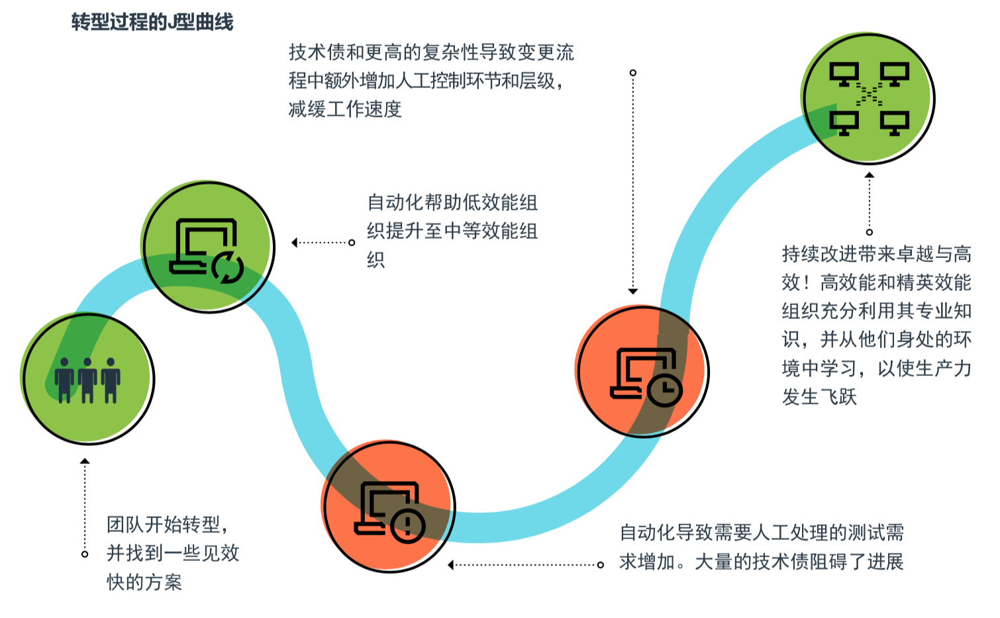
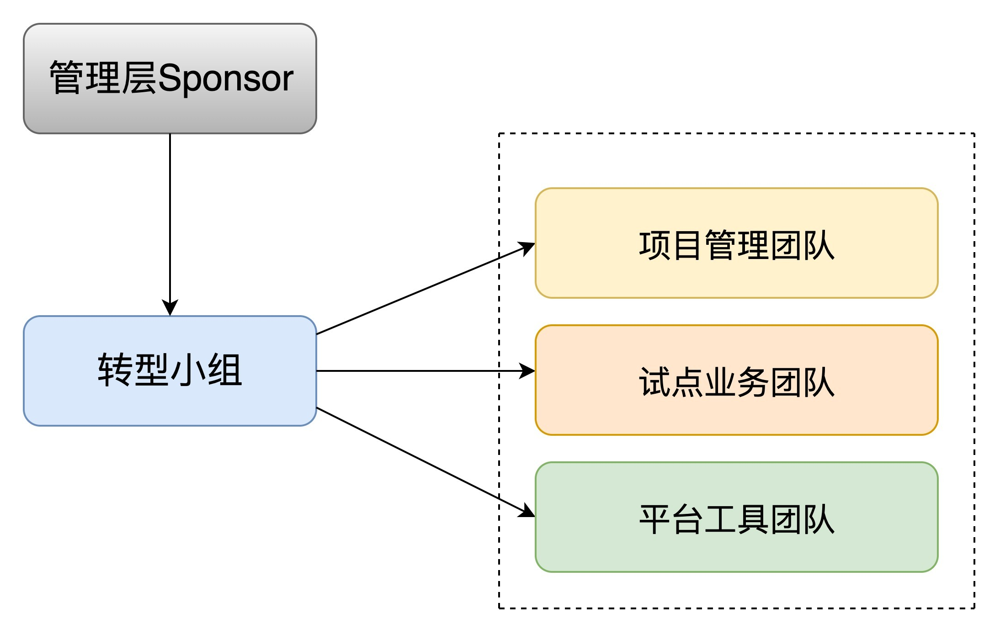

- 00 开篇词 从默默无闻到风靡全球，DevOps究竟有什么魔力？.md.html
- 01 DevOps的“定义”：DevOps究竟要解决什么问题？.md.html
- 02 DevOps的价值：数字化转型时代，DevOps是必选项？.md.html
- 03 DevOps的实施：到底是工具先行还是文化先行？.md.html
- 04 DevOps的衡量：你是否找到了DevOps的实施路线图？.md.html
- 05 价值流分析：关于DevOps转型，我们应该从何处入手？.md.html
- 06 转型之路：企业实施DevOps的常见路径和问题.md.html
- 07 业务敏捷：帮助DevOps快速落地的源动力.md.html
- 08 精益看板（上）：精益驱动的敏捷开发方法.md.html
- 09 精益看板（下）：精益驱动的敏捷开发方法.md.html
- 10 配置管理：最容易被忽视的DevOps工程实践基础.md.html
- 11 分支策略：让研发高效协作的关键要素.md.html
- 12 持续集成：你说的CI和我说的CI是一回事吗？.md.html
- 13 自动化测试：DevOps的阿克琉斯之踵.md.html
- 14 内建质量：丰田和亚马逊给我们的启示.md.html
- 15 技术债务：那些不可忽视的潜在问题.md.html
- 16 环境管理：一切皆代码是一种什么样的体验？.md.html
- 17 部署管理：低风险的部署发布策略.md.html
- 18 混沌工程：软件领域的反脆弱.md.html
- 19 正向度量：如何建立完整的DevOps度量体系？.md.html
- 20 持续改进：PDCA体系和持续改进的意义.md.html
- 21 开源还是自研：企业DevOps平台建设的三个阶段.md.html
- 22 产品设计之道：DevOps产品设计的五个层次.md.html
- 23 持续交付平台：现代流水线必备的十大特征（上）.md.html
- 24 持续交付平台：现代流水线必备的十大特征（下）.md.html
- 25 让数据说话：如何建设企业级数据度量平台？.md.html
- 26 平台产品研发：三个月完成千人规模的产品要怎么做？.md.html
- 27 巨人的肩膀：那些你不能忽视的开源工具.md.html
- 28 迈向云端：云原生应用时代的平台思考.md.html
- 29 向前一步：万人规模企业的DevOps实战转型案例（上）.md.html
- 30 向前一步：万人规模企业的DevOps实战转型案例（下）.md.html
- 期中总结 3个典型问题答疑及如何高效学习 (1).md.html
- 期中总结 3个典型问题答疑及如何高效学习.md.html
- 期末总结 在云时代，如何选择一款合适的流水线工具？.md.html
- 特别放送（一）成为DevOps工程师的必备技能（上）.md.html
- 特别放送（三）学习DevOps不得不了解的经典资料.md.html
- 特别放送（二）成为DevOps工程师的必备技能（下）.md.html
- 特别放送（五）关于DevOps组织和文化的那些趣事儿.md.html
- 特别放送（四）Jenkins产品经理是如何设计产品的？.md.html
- 结束语 持续改进，成就非凡！.md.html
- 捐赠
06 转型之路：企业实施DevOps的常见路径和问题
你好，我是石雪峰。今天我来跟你聊聊企业实施DevOps的常见路径和问题。
由于种种原因，我曾直接或者间接地参与过一些企业的DevOps转型过程，也跟很多企业的DevOps负责人聊过他们的转型故事。这些企业的转型过程并不是一帆风顺的，在最开始引入DevOps的时候，他们也面临很多普遍的问题，比如企业业务都忙不过来了，根本没有时间和精力投入转型工作之中，或者是企业内部的系统在经历几代建设之后变得非常庞大，以至于谁都不敢轻易改变。
但是，即便存在着种种问题，我也始终认为，DevOps转型之路应该是有迹可循的。很多企业所面临的问题并不是独一无二的，甚至可以说，很多公司都是这样一步步走过来的。所以，在转型之初，如果能够参考借鉴一条常见的路径，并且对可能遇到的问题事先做好准备，企业的转型过程会顺利很多。
两种轨迹
其实，对于企业的转型来说，DevOps也并没有什么特别之处，跟更早之前的敏捷转型一样，如果想在企业内部推行一种新的模式，无外乎有两种可行的轨迹：一种是自底向上，一种是自顶向下。
自底向上
在这种模式下，企业内部的DevOps引入和实践源自于一个小部门或者小团队，他们可能是DevOps的早期倡导者和实践者，为了解决自身团队内部，以及上下游团队交互过程中的问题，开始尝试使用DevOps模式。由于团队比较小，而且内部的相关资源调动起来相对简单，所以这种模式比较容易在局部获得效果。
当然，DevOps的核心在于团队间的协作，仅仅一个小团队内部的改进还算不上是DevOps转型。但是，就像刚刚提到的那样，如果企业太大以至于很难一次性改变的话，的确需要一些有识之士来推动这个过程。如果你也身处在这样一个团队之中，那么我给你的建议是采用“羽化原则”，也就是首先在自己团队内部，以及和自己团队所负责的业务范围有强依赖关系的上下游团队之间建立联系，一方面不断扩展自己团队的能力范围，另一方面，逐步模糊上下游团队的边界，由点及面地打造DevOps共同体。
当然，如果想让DevOps转型的效果最大化，你一定要想方设法地让高层知晓局部改进的效果，让他们认可这样的尝试，最终实现横向扩展，在企业内部逐步铺开。
自顶向下
你还记得我在专栏第2讲中提到的那家把DevOps定义为愿景OKR指标的金融企业吗？这就是典型的自顶向下模式，也就是企业高层基于自己对于行业趋势发展的把握和团队现状的了解，以行政命令的方式下达任务目标。在这种模式下，公司领导有足够的意愿来推动DevOps转型并投入资源，各个团队也有足够清晰的目标。
那么，这样是不是就万事大吉了呢？其实不然。在企业内部有这样一种说法：只要有目标，就一定能达成。因为公司领导对于细节的把握很难做到面面俱到，团队为了达成上层目标，总是能想到一些视角或数据来证明目标已经达成，这样的DevOps转型说不定对公司业务和团队而言反而是一种伤害。
举个例子，有一次，我跟一家公司的DevOps转型负责人聊天。我问道：“你们的前置时间是多久？”他回答说：“一周。”我心想，这还挺好的呀。于是就进一步追问：“这个前置时间是怎么计算的呢？”他回答说：“我们计算的是从开发开始到功能测试完成的时间。”我心想，这好像有点问题。于是，我就又问道：“那从业务方提出需求到上线发布的时间呢？”他回答：“这个啊，大概要两个月时间。”你看，难怪业务方抱怨不断呢，提个需求两个月才能上线。但是，如果仅仅看一周的开发时长，感觉是不是还不错呢？
所以，一套客观有效的度量指标就变得非常重要，关于这个部分，我会用两讲的时间来和你详细聊聊。
说到这儿，不知道你发现了没有，无论企业的DevOps转型采用哪条轨迹，寻求管理层的认可和支持都是一个必选项。如果没有管理层的支持，DevOps转型之路将困难重重。因为无论在什么时代，变革一直都是一场勇敢者的游戏。对于一家成熟的企业而言，无论是组织架构、团队文化，还是工程能力、协作精神，都是长期沉淀的结果，而不是在一朝一夕间建立的。
除此之外，转型工作还需要持续的资源投入，这些必须借助企业内部相对比较high level的管理层的推动，才能最终达成共识并快速落地。如果你所在的公司恰好有这样一位具备前瞻性视角的高层领导，那么恭喜你，你已经获得了DevOps转型道路上至关重要的资源。
我之前的公司就有这样一位领导，他一直非常关心内部研发效率的提升。听说他要投入大量资源加紧进行DevOps能力建设时，我兴奋地描绘了一幅美好的图景，但当时他说了一句意味深长的话：“这个事你一旦做起来，就会发现并不容易。”后来在实施DevOps的过程中，这句话无数次得到了印证。
通用路径
因此，你看，管理层的支持只是推动DevOps转型的要素之一，在实际操作过程中，还需要很多技巧。为了帮助你少走弯路，我总结提取了一条通用路径，现在分享给你。
第1步：寻找合适的试点项目
试点项目是企业内部最初引入DevOps实践并实施改进工作的业务对象。可以说，一个合适的项目对于企业积累DevOps实践经验是至关重要的。我认为，一个合适的项目应该具备以下几个特征：
- 贴近核心业务。DevOps要以业务价值为导向。对于核心业务，管理层的关注度足够高，各项业务指标也相对比较完善，如果改进效果可以通过核心业务指标来呈现，会更有说服力。同时，核心业务的资源投入会有长期保障。毕竟，你肯定不希望DevOps转型落地项目因为业务调整而半途而废吧。
- 倾向敏捷业务。敏捷性质的业务需求量和变更都比较频繁，更加容易验证DevOps改造所带来的效果。如果一个业务以稳定为主要诉求，整体处于维护阶段，变更的诉求和意愿都比较低，那么这对于DevOps而言，就不是一个好的选择。我之前在跟一家军工企业沟通的时候，了解到他们每年就固定上线两次，那么在这种情况下，你说还有没有必要搞DevOps呢？
- 改进意愿优先。如果公司内部的团队心比天高，完全瞧不上DevOps，觉得自己当前的流程是最完美的，那么，你再跟他们费力强调DevOps的价值，结果很可能事倍功半。相反，那些目前绩效一般般的团队都有非常强烈的改进诉求，也更加愿意配合转型工作。这时，团队的精力就可以聚焦于做事本身，而不会浪费在反复拉锯的沟通上。
第2步：寻找团队痛点
找到合适的团队，大家一拍即合，接下来就需要识别团队的痛点了。所谓痛点，就是当前最影响团队效率的事情，同时也是改进之后可以产生最大效益的事情。
不知道你有没有读过管理学大师高德拉特的经典图书《目标》，他在这本书中，提出的最重要的理论就是约束理论。关于这个理论，我会在后面的内容中展开介绍，现在你只需要记得“木桶原理”就行了，即最短的木板决定了团队的容量。
至于如何找寻痛点，我已经在上一讲详细介绍过了。你不妨在内部试点团队中开展一次价值流分析活动，相信你会有很多意外的发现。如果你不记得具体怎么做了，可以回到第5讲复习一下。
第3步：快速建立初期成功
找到了合适的团队，也识别出了一大堆改进事项，你是不是感觉前景一片大好，准备撸起袖子加油干了呢？打住！这个时候，切记不要把面铺得太广，把战线拉得太长，这其实是DevOps转型初期最典型的一个陷阱。
首先，转型初期资源投入有限，难以支撑大量任务并行。其次，由于团队成员之间还没有完全建立起信任关系，那些所谓的最佳实践很容易水土不服。如果生搬硬套的话，很可能会导致大量摩擦，从而影响改进效果。最后，管理层的耐心也没有想象中那么多，如果迟迟看不到效果，很容易影响后续资源的投入。
所以，最关键的就是识别一个改进点，定义一个目标。比如，环境申请和准备时间过程，那么就可以定义这样一个指标：优化50%的环境准备时长。这样一来，团队的目标会更加明确，方便任务的拆解和细化，可以在几周内见到明显的成果。
第4步：快速展示和持续改进
取得阶段性的成果之后，要及时向管理层汇报，并且在团队内部进行总结。这样，一方面可以增强管理层和团队的信心，逐步加大资源投入；另一方面，也能够及时发现改进过程中的问题，在团队内部形成持续学习的氛围，激发团队成员的积极性，可以从侧面改善团队的文化。
当然，类似这样的案例在企业内部都极具价值。如果可以快速扩展，那么效果就不仅仅局限于小团队内部，而是会上升到公司层面，影响力就会更加明显了。
以上这四个步骤，基本涵盖了企业DevOps转型的通用路径。不过即便完全按照这样的路径进行转型，也很难一帆风顺。在这条路径之下，也隐藏着一些可以预见的问题，最典型的就是DevOps转型的J型曲线，这也是在2018年DevOps状态报告中的一个重点发现。

在转型之初，团队需要快速识别出主要问题，并给出解决方案。在这个阶段，整个团队的效能水平比较低，可以通过一些实践引入和工具的落地，快速提升自动化的能力和水平，从而帮助团队获得初期的成功。
但是，随着交付能力的提升，质量能力和技术债务的问题开始显现。比如，由于大量的手工回归测试，团队难以压缩测试周期，从而导致交付周期陷入瓶颈；项目架构的问题带来的技术债务导致集成问题增多，耦合性太强导致改动牵一发而动全身……
这个时候，团队开始面临选择：是继续推进呢？还是停滞不前呢？继续推进意味着团队需要分出额外的精力来加强自动化核心能力的预研和建设，比如优化构建时长、提升自动化测试覆盖率等，这些都需要长期的投入，甚至有可能会导致一段时间内团队交付能力的下降。
与此同时，与组织的固有流程和边界问题相关的人为因素，也会制约企业效率的进一步提升。如何让团队能够有信心减少评审和审批流程，同样依赖于质量保障体系的建设。如果团队迫于业务压力，暂缓DevOps改进工作，那就意味着DevOps难以真正落地发挥价值，很多DevOps项目就是这样“死”掉的。
那么说到这儿，你可能会问，这些到底应该由哪个团队来负责呢？换句话说，企业进行DevOps转型，是否需要组建一个专职负责的团队呢？如果需要的话，团队的构成又是怎样的呢？
关于这些问题，我的建议是，在转型初期，建立一个专职的转型工作小组还是很有必要的。这个团队主要由DevOps转型关联团队的主要负责人、DevOps专家和外部咨询顾问等牵头组成，一般是各自领域的专家或者资深成员，相当于DevOps实施的“大脑”，主要负责制定DevOps转型项目计划、改进目标识别、技术方案设计和流程改造等。
除了核心团队，管理团队和工具团队也很重要。我挂一个转型小组的团队组成示意图供你参考。当然，DevOps所倡导的是一专多能，跨领域的人才对于企业DevOps的实施同样不可或缺，在挑选小组成员的时候，这一点你也需要注意下。

总结
今天，我给你介绍了企业DevOps转型的常见轨迹，分别是自底向上和自顶向下。无论采用哪种轨迹，寻求管理层的支持都至关重要。接下来，我和你一起梳理了DevOps转型的通用路径，你要注意的是，任何变革都不会是一帆风顺的，企业的DevOps转型也是如此。在经历初期的成功之后，我们很容易陷入“J型曲线”之中，如果不能突破困局，就很容易导致转型半途而废，回到起点。最后，我们一起探讨了是否需要专职的DevOps转型团队。在企业刚刚开始尝试DevOps的时候，这样的团队对于快速上手和建立团队的信心还是很有必要的。
无论如何，就像陆游在《冬夜读书示子聿》一诗中写的那样：“纸上得来终觉浅，绝知此事要躬行。”听过了太多实施DevOps的方法和路径，却还是无法真正享受到它的巨大效益，差的可能就是：先干再说的信心和动力吧。
思考题
你在企业中实施DevOps时，遇到过什么问题吗？你是怎么解决这个问题的呢？你是否走过一些弯路呢？
欢迎在留言区写下你的思考和答案，我们一起讨论，共同学习进步。如果你觉得这篇文章对你有所帮助，欢迎你把文章分享给你的朋友。
© 2019 - 2023 Liangliang Lee. Powered by gin and hexo-theme-book.